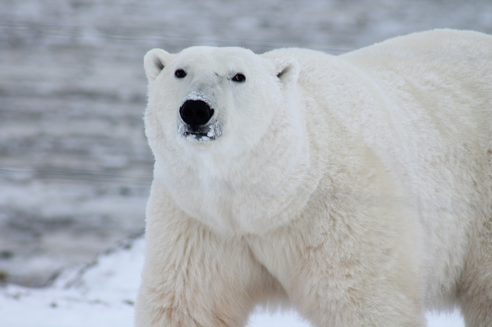

About Me
My name is Julius. I am from Aarhus, Denmark, and I study Global Business and Technology with a focus on software.
I am interested in business, technology and working with people. I enjoy learning through practical projects and developing new skills.
After high school, I spent three months as a volunteer teacher in Tanzania. I later completed eight months in the Royal Life Guards.

Interests
In my free time, I enjoy sports, travelling, spending time with friends and family, and learning about business and technology.